library(tidyverse) # loads ggplot2, dplyr, tidyr, readr and a few more
packageVersion("ggplot2") # 3.5 or higher; the course is written on 4.0
R.version.string # 4.4 or higherFirst steps in R, and the grammar in ggplot
Week 1 · Work group
02 CLAIM Thursday 13:30 · 105 min
Today is about getting started with R and in RStudio. You learn enough R to read a file and look at it, then the handful of functions that get a table into shape for a chart, and then you build one chart, one grammar slot at a time, using the same eight settings you saw in Tuesday’s lecture. Important: Nothing is handed in this week. Yet, whatever you do not finish in the room, finish at home: week 2 assumes that you understood all of it.
BEFORE THURSDAY
Install R, RStudio, the tidyverse and Quarto: Before the first work group walks you through it. Then open RStudio and run the three lines under Setup below. If any of them fails, send us a message via Canvas before Thursday. Arriving with a broken install is fine; arriving with one and not saying so is not.
Then make a folder called dsvar in Documents, not in Downloads. Every week’s folder goes into it, so all your work lives in one place.
Schedule
| min | |||
|---|---|---|---|
| 13:30 | Setup | 10 | Everyone’s R runs, and the week folder is open in RStudio |
| 13:40 | R basics | 30 | Objects, vectors, kinds of value, functions, help, packages and tables. Type them, do not paste them |
| 14:10 | Meet the data | 10 | Read a file and look at it |
| 14:20 | Wrangling with the pipe | 30 | Rows, columns, new columns, groups, and wide against long |
| 14:50 | The grammar in ggplot | 22 | One chart, built one slot at a time. The last step is homework |
| 15:12 | Next week | 3 | What changes from next Thursday |
1 · Setup
Run these in the console, the pane at the bottom left of RStudio. Each line prints something; none should give an error.
Then, in the Terminal tab (not the console), type quarto check. It should end with Checking Knitr engine render… OK.
This week’s folder
Every work group comes with a folder: the data, the course theme, and a Quarto file to work in.
- Unzip it into your
dsvarfolder. On Windows that is right-click → Extract All. Working inside the zip without extracting it is the most common reason R cannot find a file. - Double-click
dsvar-week-01.Rproj. RStudio opens with this folder as its working directory, which is why"data/…"below needs no full path. Every week, start here. - Open
workgroup-01.qmdand press Render. If a page appears, R, Quarto, the theme and the data all work.
workgroup-01.qmd |
Today’s working file. This page’s headings, an empty chunk under each. Not handed in |
theme-dsvar.R |
The course theme |
data/ |
Today’s file, exactly as the KNMI publishes it |
Console or file
There are two places to type R.
- The console runs a line the moment you press Enter, and forgets it. Use it to try things out.
- A chunk in
workgroup-01.qmd(the grey box that starts with```{r}) keeps your code. Put the cursor on a line and press Ctrl+Enter (Cmd+Enter on a Mac) to run it, or the green arrow to run the whole chunk.
Anything you want to keep goes in the file. From section 2 on, type into the chunk under each heading.
2 · R basics
2.1 · R as a calculator
144 / 10 # tenths of a degree, into degrees
(17.2 + 18.9 + 19.4) / 3The [1] in front of each answer is R numbering its output. You can ignore it.
Everything after a # is a comment. R skips it; it is there for whoever reads the code next, which is usually you. The code on this site uses comments to say what a line does.
2.2 · Objects
<- stores a value under a name. Read it out loud as “gets”: july gets 18.1.
july <- 18.1
july * 2Nothing prints when you store something. Type the name on its own to see it, or look in the Environment pane at the top right, which lists every object you have made. Names are case sensitive, so July is a different object, and one that does not exist yet. Try it in the console and read the error: object ‘July’ not found is the error you will see most often this term, and it nearly always means a typo.
RED TEXT IS NOT ALWAYS AN ERROR
R prints three kinds of red text, and only one means it failed. An error starts with Error and stops: nothing was made, and an error in a chunk stops Render too. A warning starts with Warning: it ran, but check the result. A message is information: the lines library(tidyverse) printed in section 1 were messages.
2.3 · Vectors
c() combines several values into one vector. These are De Bilt’s summer means for 2022 to 2025, in °C. Arithmetic on a vector happens to every value at once.
summers <- c(18.6, 18.4, 17.7, 18.5)
summers - 17
length(summers)PREDICT, THEN RUN
If you run summers * 10, how many numbers will be printed?
Every column of a table is a vector, which 2.8 comes back to.
2.4 · Kinds of value
Numbers are one kind of value. Two more are important to know:
"JUL" # text, always in quotes
summers > 18 # a comparison: TRUE or FALSE, once for every value
class(summers)
class("JUL")
class(summers > 18)class() shows the kind. R calls numbers numeric, text character, and TRUE or FALSE logical. glimpse() in section 3 writes the same kinds as short tags: <dbl> for numbers, <chr> for text, <lgl> for TRUE or FALSE.
A comparison is all filter() in 4.2 needs: it keeps the rows where the condition is TRUE.
PREDICT, THEN RUN
What does "18.1" * 2 give?
In quotes, 18.1 is text, and R does no arithmetic on text. When a column of numbers arrives as <chr>, there is nearly always a letter or a symbol hiding in it somewhere.
2.5 · Functions
A function takes values in and gives a value back. The values inside the brackets are its arguments, and they can have names.
mean(summers)
round(18.36, digits = 1)
seq(1901, 2021, by = 30)One more thing to know from the first day: missing values, which are written as NA.
mean(c(17.2, NA, 19.4))
mean(c(17.2, NA, 19.4), na.rm = TRUE)One missing value makes the whole mean missing, unless you tell R how to handle it. R is being careful here, not difficult: an average of the values you happen to have is a different number, and R wants you to choose it on purpose. Today’s data set has missing values in it.
2.6 · Help
? and a function’s name, typed in the console, open its help page in the Help pane, bottom right. So does F1, with the cursor on the name.
?meanEvery help page has the same parts:
| Description | what the function does, in a sentence or two |
| Usage | how to call it: every argument, and its default |
| Arguments | what each argument means |
| Value | what it gives back |
| Examples | code that runs, at the bottom. Try one in the console |
Under Usage, ?mean shows mean(x, trim = 0, na.rm = FALSE, ...). An argument written with = has a default, and R uses it whenever you leave the argument out. na.rm = FALSE is why 2.5 gave NA: unless you say otherwise, R keeps the missing values in. A default is still a choice; someone else made it.
Help pages are written for people who already know R, so do not expect to understand all parts immediately. Usage and Examples are enough to start.
2.7 · Packages
A package is a set of functions someone else wrote. You install it once per computer and load it once per session.
install.packages("tidyverse") # once. You did this before Thursday
library(tidyverse) # every session, at the top of every fileggplot2, which draws every chart in this course, is one of the packages in the tidyverse.
2.8 · Tables
A table in R is a data frame: vectors of the same length, side by side, one per column. tibble(), from the tidyverse, makes one from vectors you name. 2022:2025 is every whole number from 2022 to 2025.
recent <- tibble(year = 2022:2025, summer = summers)
recent
recent$summer # $ takes one column back out, as a vectorEvery column holds one kind of value, and the tags under the names say which; <int> is a whole number. A tibble is the tidyverse’s own data frame, and it prints more tidily. Help pages and AI answers say data frame; in this course the two mean the same thing.
Every table in this course is a data frame like this one, read from a file instead of typed in. That is next.
3 · Meet the data
The Royal Netherlands Meteorological Institute (KNMI) publishes monthly mean temperatures for its weather stations. This is De Bilt, the reference station, and this is what the file looks like when it arrives:
Deze gegevens mogen vrij worden gebruikt mits de volgende bronvermelding wordt gegeven:
KONINKLIJK NEDERLANDS METEOROLOGISCH INSTITUUT (KNMI)
These data can be used freely provided that the following source is acknowledged:
ROYAL NETHERLANDS METEOROLOGICAL INSTITUTE
MAAND- en JAARGEMIDDELDE TEMPERATUREN (0.1 graden Celsius)
MONTHLY AND YEARLY MEAN TEMPERATURES (0.1 degrees Celsius)
STN = stationsnummer / WMO-number = 06... (235=De Kooy,240=Schiphol,260=De Bilt,270=Leeuwarden,280=Eelde,
290=Twenthe,310=Vlissingen,344=Rotterdam,370=Eindhoven,380=Maastricht)
STN,YYYY, JAN, FEB, MAR, APR, MAY, JUN, JUL, AUG, SEP, OCT, NOV, DEC, YEAR
260,1901, -3, -10, 35, 89, 120, 144, 184, 164, 144, 102, 52, 29, 88
260,1902, 45, -4, 52, 84, 92, 155, 153, 146, 129, 85, 37, 8, 82
260,1903, 29, 56, 70, 55, 126, 140, 153, 150, 141, 110, 56, 7, 91Two things to notice before reading it in. Thirteen lines of notes come before the header, and R has to be told to skip them. And the unit is “0.1 degrees Celsius”, so 144 means 14.4 °C. Nothing in the numbers tells you that; only the notes do.
bilt <- read_csv("data/knmi-de-bilt-monthly.txt", skip = 13)
glimpse(bilt)glimpse() lists every column, its kind and its first values. Every column of bilt is <dbl>: the file holds no text at all. Four more ways to look:
View(bilt) # the table in a spreadsheet-style tab. Look, do not edit
nrow(bilt) # how many rows
bilt$JUL # one column, as a vector. $ picks a column by name
summary(bilt) # six numbers for every column, and how many are missingsummary() works on one column too, and it is worth running on every new file:
summary(bilt$JUL)
summary(bilt$YEAR)The six numbers are the smallest and the largest, the mean, the median in the middle, and the two quartiles, a quarter of the way in from each end. Two things in them should stop you. The warmest July reads 223, which is no temperature in degrees: that is the unit from the notes, showing in the numbers. And YEAR has one NA, a year with no annual mean.
What is one row? One year. The twelve months sit side by side as columns, and YEAR is KNMI’s own annual mean. It is blank for 2026, which is not over yet.
| Column | What it is |
|---|---|
STN |
Station number. 260 is De Bilt. The same in every row |
YYYY |
The year |
JAN … DEC |
Monthly mean temperature, tenths of °C |
YEAR |
KNMI’s annual mean, tenths of °C. Blank for the current year |
Source, for every caption you write today: KNMI, De Bilt monthly means.
Type the columns
Every week starts the same way: go down the columns and explain each one. Four words cover almost everything this course will meet:
| identifier | names a row; you never compare by it |
| categorical | sorts rows into groups: nominal with no order, ordinal with one |
| continuous | a measured quantity, where differences mean something |
| date | a point in time, ordered by nature |
These words are about what a column means. The tags from 2.4 are about how R stores it, and the two do not always match. STN is an identifier. YYYY is a date, stored as a plain number. JAN to DEC and YEAR are continuous. Week 2 is built on the categorical kind.
4 · Wrangling with the pipe
A chart can only show the table or data set it is given. Most of the work before a chart is getting the table into the right shape: the right rows, the right columns, the right units, one row per thing you want to draw. The tidyverse does this with a handful of functions, often called verbs. Each one takes a table and gives back a table, which is why they chain.
4.1 · The pipe
|> passes what is on its left into the function on its right, as the first argument. Read it out loud as “and then”. These two lines do exactly the same:
glimpse(bilt)
bilt |> glimpse()The pipe earns its place once there are several steps. Inside out, you read the last step first:
head(filter(bilt, YYYY >= 2016), 3)With the pipe, you read the steps in the order they happen: take bilt, and then keep the years from 2016, and then show the first three rows.
bilt |>
filter(YYYY >= 2016) |>
head(3)NOTHING IS SAVED UNTIL YOU SAY SO
A verb returns a new table and leaves bilt as it was. To keep the result, give it a name with <-. Running bilt |> filter(YYYY >= 2016) and then nrow(bilt) still gives 126.
4.2 · filter() keeps rows
filter() keeps the rows for which a condition is true. Everything else is dropped.
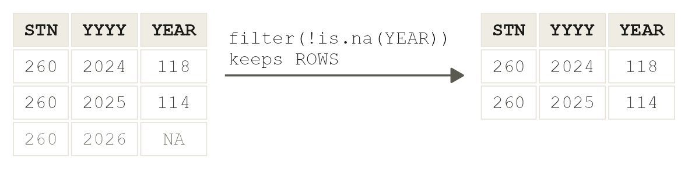
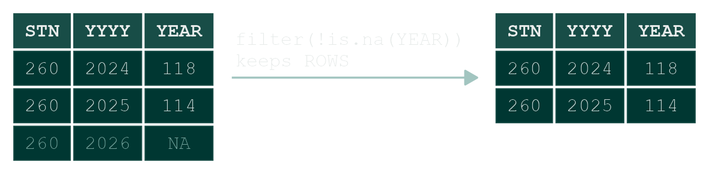
bilt |> filter(YYYY >= 2016) # from 2016 on
bilt |> filter(YYYY >= 1991, YYYY <= 2020) # a comma means "and"
bilt |> filter(!is.na(YEAR)) # ! means "not"== |
equal to. Two signs: one = sets an argument, == compares |
!= |
not equal to |
>, <, >=, <= |
greater, smaller, or equal |
%in% |
one of: month %in% c("JUN", "JUL", "AUG") |
is.na() |
missing |
PREDICT, THEN RUN
How many rows does the second line keep? Then add |> nrow() to the end of it and check.
4.3 · select() keeps columns
select() keeps the columns you name, in the order you name them. A minus sign drops one, and new = old renames it on the way.
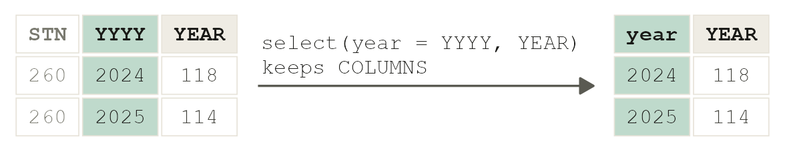
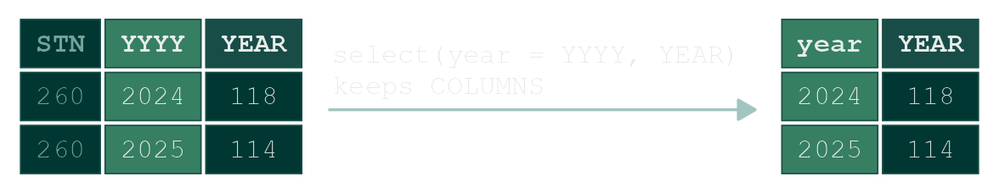
bilt |> select(YYYY, JAN, JUL) # three columns
bilt |> select(-STN) # every column except STN
bilt |> select(year = YYYY, YEAR) # keep two, and rename one
bilt |> select(YYYY, JAN:DEC) # a colon means "from ... to"4.4 · mutate() makes a column
mutate() adds a column, or replaces one, by computing it row by row. The arithmetic is the vector arithmetic from 2.3, done to a whole column at once.
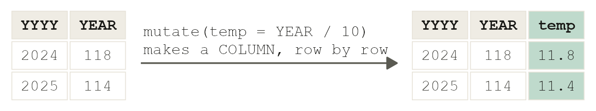
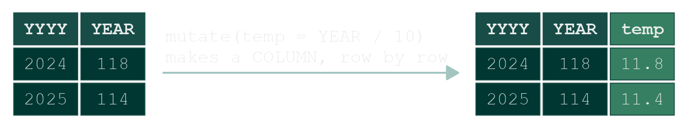
bilt |> mutate(temp = YEAR / 10) # tenths of a degree, into degrees
bilt |> mutate(summer = (JUN + JUL + AUG) / 30) # summer mean, in degreesThe second line divides by 30: three months added up, divided by three for the mean and by ten for the unit. For 2022 to 2025 it gives the four summers you typed in 2.3.
4.5 · arrange() sorts rows
bilt |>
mutate(temp = YEAR / 10) |>
arrange(desc(temp)) |> # desc(): largest first
head(5)PREDICT, THEN RUN
The five warmest years at De Bilt since 1901: from which decades do you expect them to come?
4.6 · group_by() and summarise(): one row per group
summarise() collapses many rows into one. After group_by(), it does that once per group. Here the groups are decades: floor(year / 10) * 10 turns 1987 into 1980.
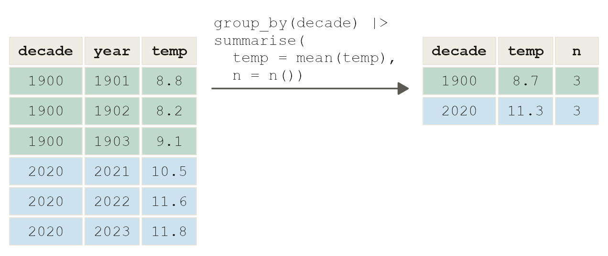
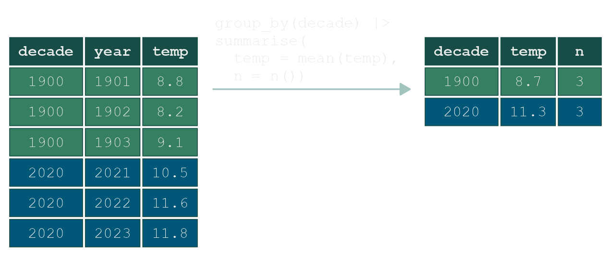
bilt |>
filter(!is.na(YEAR)) |>
mutate(temp = YEAR / 10, decade = floor(YYYY / 10) * 10) |>
group_by(decade) |>
summarise(temp = mean(temp), n = n())Always ask for n = n(). It says how many rows each summary stands for, and here it shows something the means hide: the first decade has nine years (the record starts in 1901) and the last has six. count(decade) is a shortcut for group_by(decade) |> summarise(n = n()).
4.7 · Wide and long: pivot_longer() and pivot_wider()
A table is tidy when every variable is a column and every row is one observation. bilt is not quite tidy: month is a variable, but its twelve values, JAN to DEC, are the column names. That shape is called wide. It is good for reading, and bad for ggplot, which can only map a column: there is no column called month to put on an axis or split into panels.
pivot_longer() turns the columns you name into two new columns: one for the old names, one for the values.
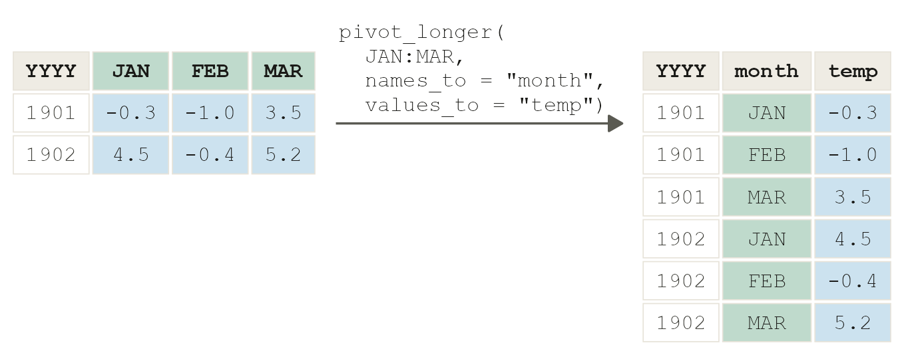
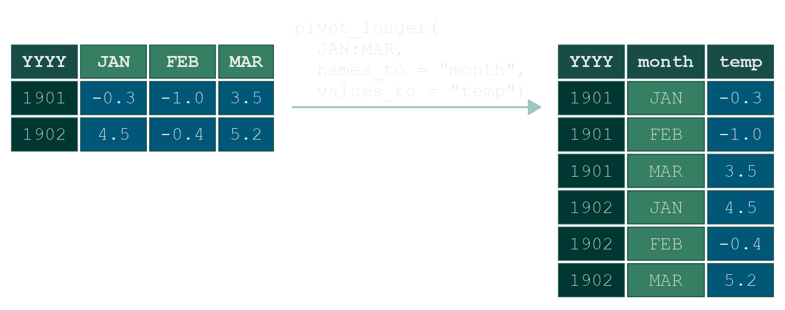
long <- bilt |>
select(YYYY, JAN:DEC) |>
pivot_longer(JAN:DEC, names_to = "month", values_to = "temp")PREDICT, THEN RUN
bilt has 126 rows. How many will long have? Then run nrow(long).
pivot_wider() is the way back. It takes the names for the new columns from one column and their values from another.
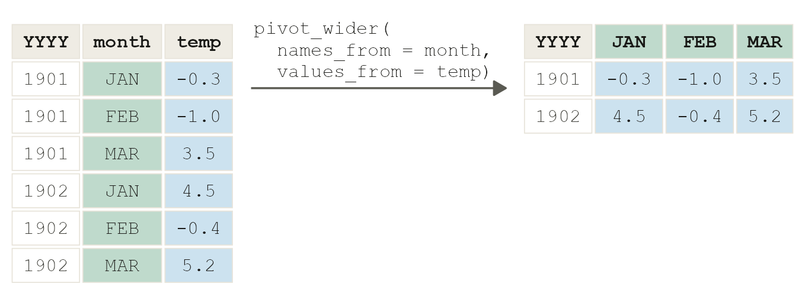
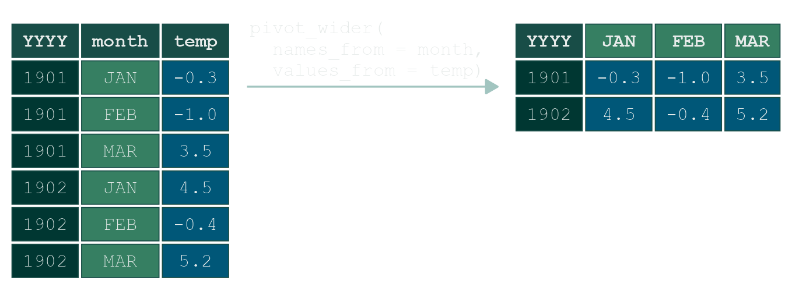
long |> pivot_wider(names_from = month, values_from = temp)Neither shape is wrong. Wide is for people reading a table; long is what ggplot and group_by() need. You will pivot in both directions this term.
4.8 · The whole pipeline
Everything at once: the table the grammar section uses, made in one pipe.
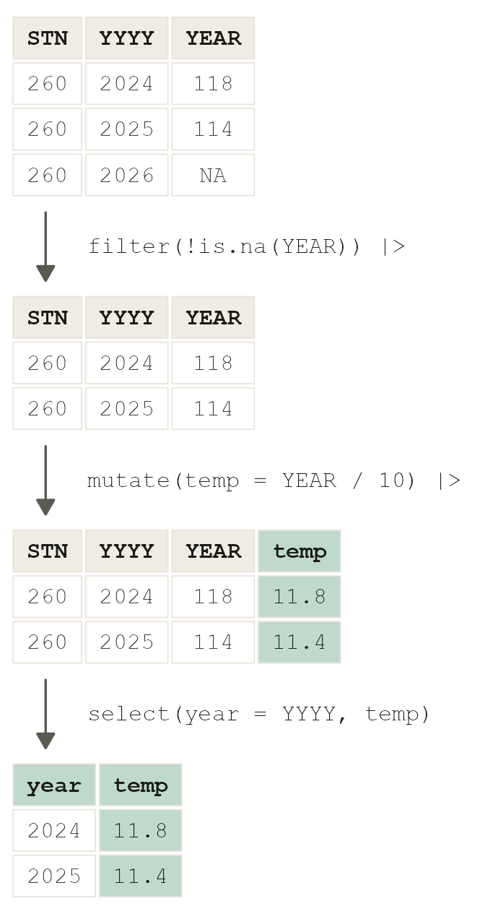
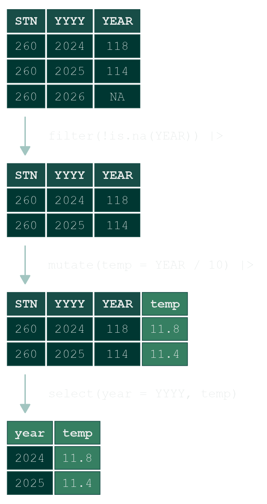
annual <- bilt |>
filter(!is.na(YEAR)) |> # keep the rows where YEAR is not missing
mutate(temp = YEAR / 10) |> # a new column: tenths of a degree, into degrees
select(year = YYYY, temp) # keep two columns, and rename onePREDICT, THEN RUN
bilt has 126 rows. How many will annual have, and why? Then run nrow(annual).
125 complete years, 1901 to 2025. That number is the n on the chart you are about to build.
5 · The grammar in ggplot
Tuesday’s lecture described every chart with the same eight slots or lines. In ggplot each slot is a piece of code, and you add the pieces with +. Most slots have a default, so a chart can be very short and still have all eight.
| Slot | What it decides | In ggplot |
|---|---|---|
| data | which table | ggplot(annual, ...) |
| mapping | which column goes to which channel | aes(x = year, y = temp) |
| geom | the mark | geom_point(), geom_line() |
| stat | anything computed before drawing | geom_smooth() |
| scale | how a value becomes a position or a colour | scale_y_continuous() |
| coord | the space the marks are drawn in | coord_cartesian() |
| facet | splitting into small panels | facet_wrap() |
| theme | everything that is not data | theme_minimal(), labs() |
Add one slot, run it, and look at what changed before you add the next.
5.1 · Data and mapping
PREDICT
What appears when there is data and a mapping but no geom?
ggplot(annual, aes(x = year, y = temp))Axes with the right ranges and nothing on them. The mapping is set; no marks have been drawn yet.
5.2 · Geom
One mark per year:
ggplot(annual, aes(x = year, y = temp)) +
geom_point()Same mapping, another geom:
ggplot(annual, aes(x = year, y = temp)) +
geom_line()A line says the years are connected, that the temperature existed between two measurements and moved from one to the next. For a temperature that is true. For two separate surveys it would not be.
5.3 · Stat
Some layers draw something that is computed from the rows rather than the rows themselves. geom_smooth() fits a curve through the points and draws that, with a band around it.
ggplot(annual, aes(x = year, y = temp)) +
geom_line() +
geom_smooth()The message R prints says what it computed. Nothing on the chart says so, which is why a chart with a smooth needs a caption.
5.4 · Scale
The scale decides how a value becomes a position. Here the y axis is made to run from 0 to 20 °C:
ggplot(annual, aes(x = year, y = temp)) +
geom_line() +
scale_y_continuous(limits = c(0, 20))LOOK AGAIN
Same data, same geom, and the warming has almost disappeared. Only the scale changed. Which version is right is week 2’s question. For now, notice how much one line can change.
5.5 · Coord
The coord is the space the marks are drawn in. coord_cartesian() zooms in on part of it without dropping any data:
ggplot(annual, aes(x = year, y = temp)) +
geom_line() +
coord_cartesian(xlim = c(1990, 2025))5.6 · Facet
A facet splits one chart into small panels, one per group. It needs a column that says which group each row is in, and annual has none. The months are the obvious groups, but in bilt they are column names. This is where 4.7 pays off: pivot_longer() moves them into a column of their own.
seasons <- bilt |>
filter(!is.na(DEC)) |> # complete years only
select(year = YYYY, JAN, APR, JUL, OCT) |> # one month from each season
pivot_longer(JAN:OCT, names_to = "month", values_to = "temp") |>
mutate(temp = temp / 10)
seasonsFour rows per year now, one per month. ggplot can only map a column, so the shape of the table decides which charts are one line away.
ggplot(seasons, aes(x = year, y = temp)) +
geom_line() +
facet_wrap(~ month)The panels are in alphabetical order, April first. That is R’s default for text, and week 2 is about why it is rarely the order you want.
5.7 · Theme and labels
labs() writes the words, and the title is the most-read line on a chart. Tuesday’s lecture argued that a chart is a claim, so the title states the claim instead of naming the variables. The caption carries the n, the source and what the chart cannot tell you.
ggplot(annual, aes(x = year, y = temp)) +
geom_line() +
labs(title = "De Bilt is about two degrees warmer than a century ago",
subtitle = "Annual mean temperature at De Bilt, °C",
caption = "n = 125 complete years, 1901 to 2025 · KNMI, De Bilt monthly means · one station, raw record",
x = NULL, y = "°C")Every chart on this page has used the course theme, which the setup chunk of workgroup-01.qmd switched on with theme_set(theme_dsvar()). A theme added to one chart overrides it for that chart only:
... + theme_minimal()What is inside a theme, and how to write your own, is week 7.
5.8 · Your turn
Change slots, not data. Start this in the room if there is time; otherwise it is homework. Starting from the chart in 5.7:
- Draw July only, with points instead of a line. (Which table has July in it, and which function keeps some rows?)
- Add a smooth.
- Write a title that says what the chart shows, in one sentence with a verb.
Next week
Nothing is handed in today. Keep the folder and workgroup-01.qmd: the reference sheet below and your own file are what you will look things up in next week.
From week 2 every work group has two parts. In Part I, the teacher works through one example with you, with all the code on the page. In Part II you build a different chart from the same file on your own, first on paper and then in R, and then a misleading version of it. Part II is that week’s portfolio entry, and the only thing you hand in. The charts from next Thursday are the first ones the room critiques, at the start of week 3’s lecture.
Reference sheet
Everything today used. The examples run on economics, a dataset that comes with ggplot2, so they cannot be pasted into today’s file without being understood first.
NoteR basics
x <- 3 # store a value under a name
c(1, 5, 9) # several values in one vector
"text" # text goes in quotes
x > 2 # a comparison: TRUE or FALSE
class(x) # which kind: numeric, character or logical
mean(c(1, 5, NA), na.rm = TRUE) # leave missing values out, on purpose
?mean # the help page. Usage shows every default
library(tidyverse) # load a package, once per session
tibble(a = 1:3, b = c("x", "y", "z")) # a table: vectors of the same lengthAn error stops and makes nothing; a warning ran, but check the result; a message is information.
NoteReading, looking at and changing a table
read_csv("file.csv", skip = 13) # skip lines of notes before the header
glimpse(d) # every column, its kind, its first values
summary(d) # six numbers per column, and the NAs
d$column # one column, as a vectoreconomics |>
filter(date >= as.Date("2010-01-01")) |> # some rows
mutate(unemploy_m = unemploy / 1000) |> # a new column
select(date, unemploy_m) |> # some columns
head(3)economics |>
arrange(desc(unemploy)) |> # sorted, largest first
head(3)group_by() + summarise() give one row per group. Ask for n() every time:
economics |>
mutate(decade = floor(year(date) / 10) * 10) |>
group_by(decade) |>
summarise(unemploy = mean(unemploy), n = n())pivot_longer() moves values that sit in column names into a column of their own; pivot_wider() goes back:
long <- economics |>
select(date, psavert, uempmed) |>
pivot_longer(psavert:uempmed, names_to = "series", values_to = "value")
head(long, 4)
long |>
pivot_wider(names_from = series, values_from = value) |>
head(2)| Verb | Works on | What it does |
|---|---|---|
filter() |
rows | keeps the rows where a condition is true |
select() |
columns | keeps, drops or renames columns |
mutate() |
columns | makes or replaces a column, row by row |
arrange() |
rows | sorts; desc() for largest first |
group_by() + summarise() |
groups | one row per group |
count() |
groups | how many rows per group |
pivot_longer() / pivot_wider() |
shape | column names into a column, and back |
NoteThe grammar, slot by slot
ggplot(economics, aes(x = date, y = unemploy)) + # data and mapping
geom_line() + # geom: the mark
geom_smooth() + # stat: computed, then drawn
scale_y_continuous(limits = c(0, NA)) + # scale: here, from zero
coord_cartesian(xlim = as.Date(c("1990-01-01", "2015-01-01"))) + # coord: zoom
labs(title = "US unemployment more than doubled in the 2008 recession",
caption = "n = 574 months, 1967 to 2015 · FRED via ggplot2::economics",
x = NULL, y = "thousands") # theme: the wordsfacet_wrap(~ column) splits a chart into one panel per value of column. theme_minimal() and the other theme_*() functions go last.